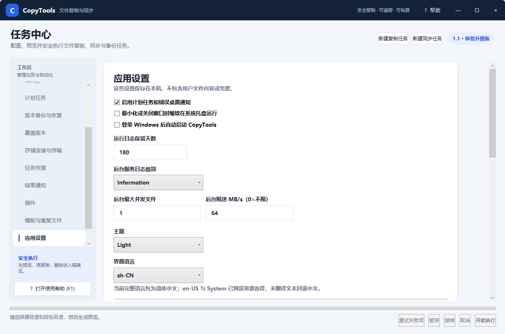

图 6：通知、托盘、日志、后台性能、主题与语言等本机设置
| 设置 | 说明 |
|---|---|
| 桌面通知 | 计划任务或后台任务结束时显示系统通知。 |
| 最小化到托盘 | 最小化或关闭主窗口时让调度器继续运行；从托盘菜单选择“退出”才完全结束。 |
| 登录 Windows 后启动 | 为当前用户注册自动启动，适合依赖计划和实时触发的电脑。 |
| 日志保留天数 | 控制本机运行日志保留时长。运行历史数据由程序的数据管理策略独立维护。 |
| 后台并发与限速 | 限制计划、实时触发任务对前台工作的磁盘和网络影响。限速为 0 表示不限制。 |
| 主题 | 在浅色和深色主题之间切换；保存后会立即应用或在下次启动保持。 |
| 界面语言 | 当前完整语言为简体中文；其他语言缺少的资源会回退中文。 |
| 快捷键 | 功能 |
|---|---|
| F1 | 打开本地 CopyTools CHM 使用帮助。 |
| Ctrl+P | 在复制任务页生成操作预览。 |
| Ctrl+Enter | 执行当前已确认的预览。 |
| Ctrl+S | 保存当前任务配置。 |
设置、运行数据库、隔离区元数据、插件和凭据索引位于当前 Windows 用户的本地应用数据目录。凭据正文使用 Windows 安全机制保护；普通日志不应包含密码、访问令牌和用户文件内容。